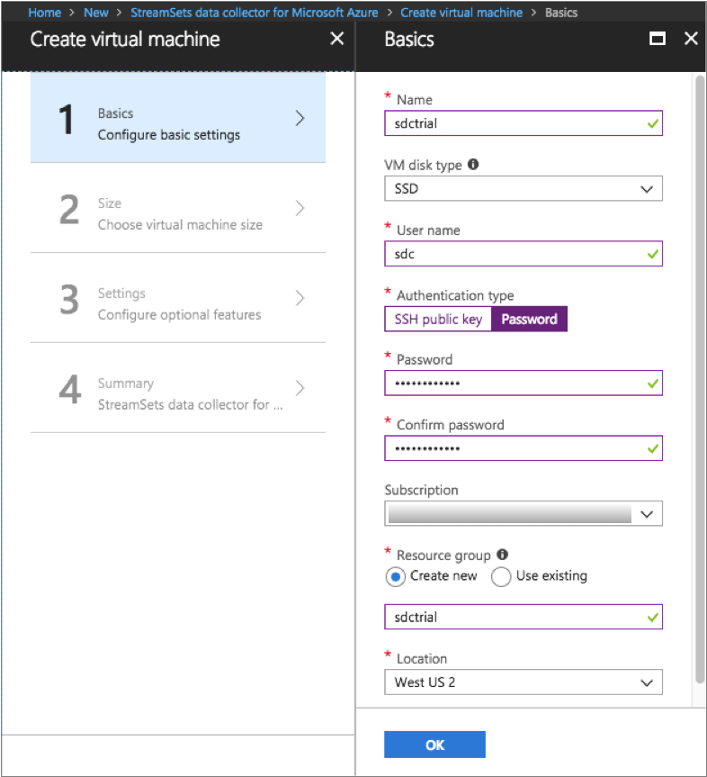
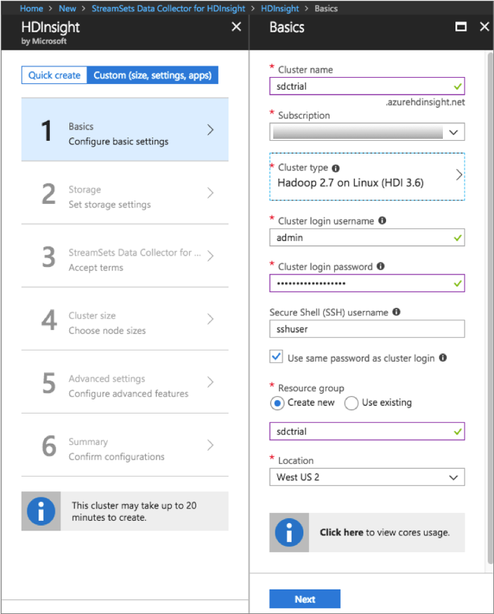
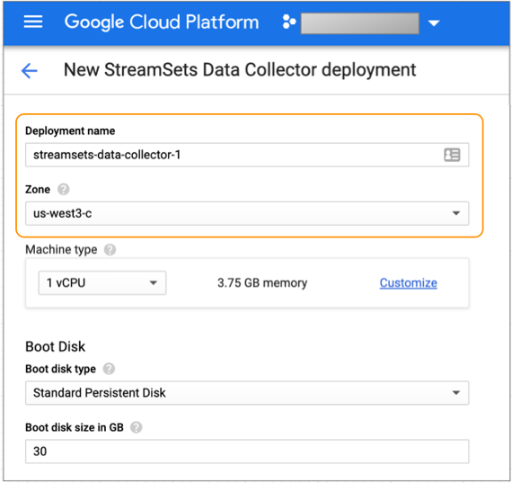
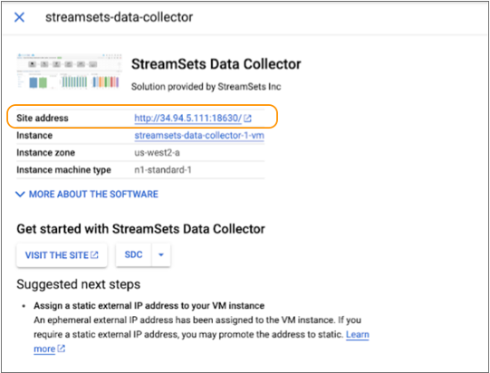
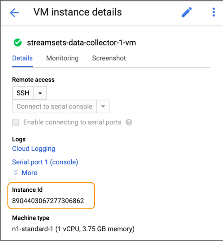
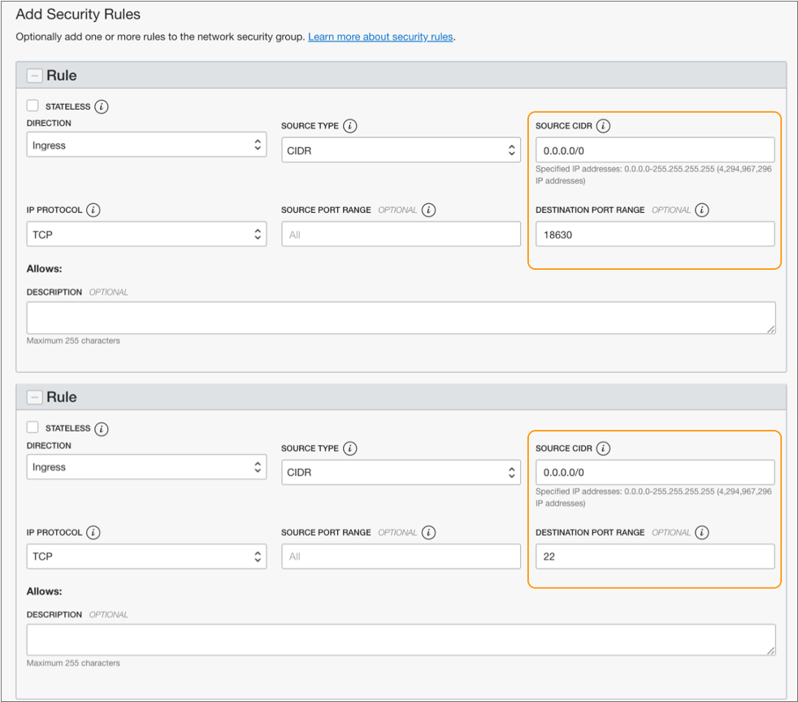
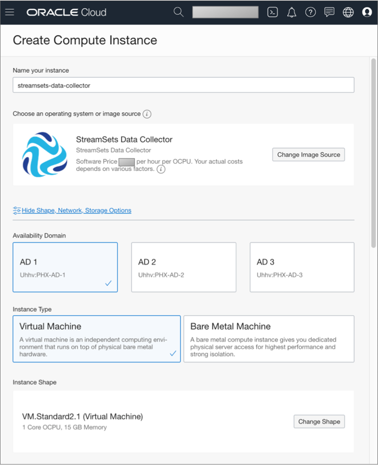
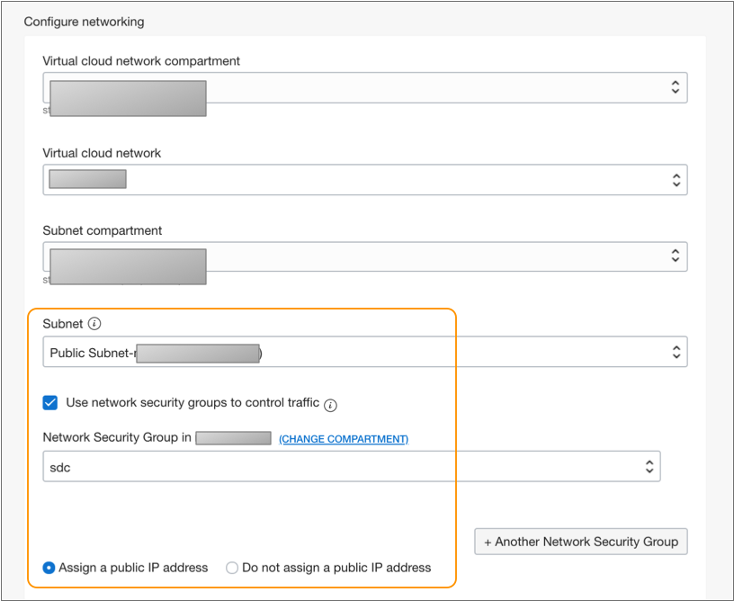
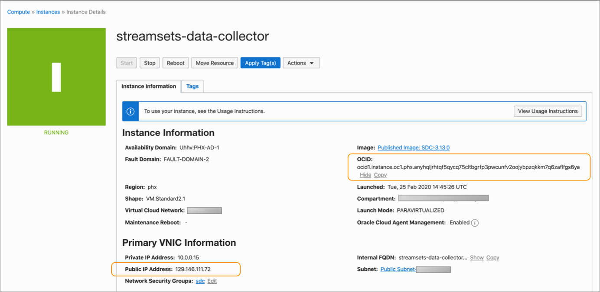
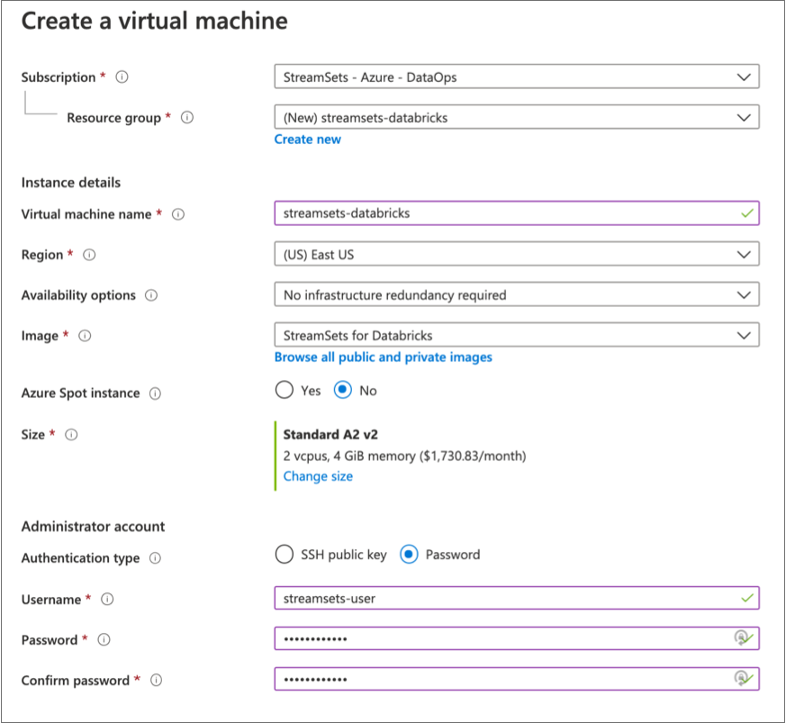

Installation with Cloud Service Providers
If you have an account with Databricks, you can install StreamSets for Databricks through the AWS or Azure marketplace. StreamSets for Databricks includes both StreamSets Data Collector and Transformer on the same virtual machine.
Data Collector installed through a cloud service provider marketplace includes all available stage libraries, including most enterprise stage libraries.
Install Data Collector on Amazon Web Services
You can install the full Data Collector on Amazon Web Services (AWS).
- In the AWS Marketplace, search for StreamSets Data Collector.
- Subscribe to the StreamSets Data Collector offer, accept the terms and conditions, and then click Continue to Configuration.
- Select the appropriate AWS fulfillment options, and then click Continue to Launch.
-
To launch Data Collector from the AWS marketplace website, choose Launch from
Website and then complete the following steps:
-
Select the recommended EC2 instance type or choose another instance
type based on your expected workload.
See the Data Collector installation requirements for details.
- Select the appropriate VPC, subnet, and key pair settings.
-
For the security group settings, click Create New Based on
Seller Settings, enter a name for the new security
group, and then configure the range of IP addresses that can access the
Data Collector web-based UI on port 18630.
Important: The default range of 0.0.0.0/0 gives all IP addresses access to Data Collector. Be sure to modify the default value to restrict access to known IP addresses only.
- Click Launch.
-
Select the recommended EC2 instance type or choose another instance
type based on your expected workload.
-
To launch Data Collector from the AWS EC2 console, choose Launch through EC2
and then complete the following steps:
- Click Launch.
-
Select the recommended EC2 instance type or choose another instance
type based on your expected workload.
See the Data Collector installation requirements for details.
- Configure the instance details, storage, and tags as needed.
-
When configuring the security group for the instance, configure the
range of IP addresses that can access the Data Collector web-based UI on port 18630.
Important: The default range of 0.0.0.0/0 gives all IP addresses access to Data Collector. Be sure to modify the default value to restrict access to known IP addresses only.
- After reviewing the details, click Launch.
-
When launching the instance, note the instance ID on the Launch
Status page.
The password to Data Collector matches the instance ID.
AWS might require a few minutes to launch an instance.
-
To access Data Collector, enter the following URL in the address bar of your browser:
http://<Public DNS of EC2 instance>:18630For example if your DNS is
ec2-12-345-678-999.compute-1.amazonaws.com, enter:http://ec2-12-345-678-999.compute-1.amazonaws.com:18630 -
To log in, enter admin as the user name and the EC2
instance ID as the password.
For information on administering Data Collector, such as viewing logs and restarting Data Collector, see Administration.
Install Data Collector on Azure
You can install the full Data Collector on Microsoft Azure.
Data Collector is installed as an RPM package on a Linux virtual machine hosted on Microsoft Azure. Data Collector is available as a service on the instance after the deployment is complete.
- Log in to the Microsoft Azure portal.
- In the Navigation panel, click Create a resource.
- Search the Marketplace for StreamSets Data Collector for Azure, and then click Create.
-
On the Create virtual machine > Basics page, enter the name of the new virtual machine, the user name to
log in to that virtual machine, and the authentication method to use for
logins.
Important: Do not use sdc as the user name to log in to the virtual machine. The sdc user account must be reserved as the system user account that runs Data Collector as a service.
You can create the virtual machine in a new or existing resource group.
You can optionally change the virtual machine size, but the default size is sufficient in most cases. If you change the default, select a size that meets the minimum Data Collector requirements.
For example, the following configuration creates a virtual machine named sdctrial with a user named sdcuser who can log into the virtual machine using password authentication. The virtual machine is created in a new resource group named sdctrial:

- Click Next.
- On the Disks page under Advanced, verify that Use managed disks is enabled.
- On the Networking page, select an existing group or create a new network security group for the virtual machine.
- On the remaining pages, accept the defaults or configure the optional features.
-
Verify the details in the Review and Create page, and
then click Create.
It can take several minutes for the resource to deploy and for Data Collector to start as a service.
- On the Overview page for the deployment, click the name of the network security group.
-
In the Inbound security rules section for the security
group, click the name of each of the following rules and then configure the
range of IP addresses allowed for each port.
Important: By default, the rules give all IP addresses access to Data Collector. Be sure to modify the default values to restrict access to known IP addresses only.
Inbound Security Rule Description sdcport Range of IP addresses that can access the Data Collector web-based UI on port 18630. default-allow-ssh Range of IP addresses that can use SSH to access the Data Collector virtual machine on port 22 to run the Data Collector command line interface. -
To access the Data Collector UI, enter the following URL in the address bar of your browser:
http://<virtual machine IP address>:18630 -
Use the following default credentials to log in:
admin/admin.For information on administering Data Collector, such as viewing logs and restarting Data Collector, see Administration.
Install Data Collector on Azure HDInsight
You can install the full Data Collector on a Microsoft Azure HDInsight cluster.
Data Collector is installed as an RPM package on a Linux machine in the cluster. Data Collector is available as a service on the instance after the deployment is complete.
- Log in to the Microsoft Azure portal.
- In the Navigation panel, click Create a resource.
- Search the Marketplace for StreamSets Data Collector for HDInsight Cloud, and then click Create.
- On the HDInsight page, click Custom (size, settings, apps).
-
On the Basics page, enter a cluster name, choose a
cluster type, and enter a cluster login user name and password.
You can create the cluster in a new or existing resource group.
For example, the following configuration creates a cluster named sdctrial on a Hadoop 2.7 (HDI 3.6) cluster. The cluster is created in a new resource group named sdctrial:

- Click Next.
- On the Security + networking page, accept the defaults or configure the security options and then click Next.
- On the Storage page, configure the storage options and then click Next.
- On the Applications page, click StreamSets Data Collector for HDInsight.
- Review and accept the legal terms, click Create, and then click Next.
- On the Cluster size page, select a cluster size that meets the minimum Data Collector requirements, and then click Next.
- On the Script actions page, click Next.
-
Verify the details in the Summary page, and then click
Create.
It can take up to 20 minutes to deploy the cluster.
- After the cluster is successfully deployed, view the HDInsight cluster in the Azure portal, and then click Applications.
- Locate the StreamSets Data Collector for HDInsight Cloud application, and then click Portal in the URI column to access the Data Collector UI.
-
Use the following default credentials to log in:
admin/admin.For information on administering Data Collector, such as viewing logs and restarting Data Collector, see Administration.
Install Data Collector on Google Cloud Platform
You can install the full Data Collector on Google Cloud Platform.
Data Collector is installed as an RPM package on a Linux virtual machine hosted on Google Cloud Platform. Data Collector is available as a service on the instance after the deployment is complete.
- Log into Google Cloud Platform.
- On the Marketplace page, search for StreamSets Data Collector, and then click Launch.
-
On the New StreamSets Data Collector deployment page,
enter the deployment name and select the zone.
You can optionally change the machine type and boot disk details, but the default settings are sufficient in most cases. If you change the defaults, select values that meet the minimum Data Collector requirements.
For example, the following configuration creates a deployment named streamsets-data-collector-1 in the us-west3-c zone with the default machine type and boot disk settings:

-
In the Networking section, select both of the following
firewall rules and then configure the range of IP addresses allowed for each
rule.
Important: The default range of 0.0.0.0/0 gives all IP addresses access to Data Collector. Be sure to modify the default value to restrict access to known IP addresses only.
Firewall Rule Description Allow TCP port 18630 traffic from the Internet Range of IP addresses that can access the Data Collector web-based UI on port 18630. Allow TCP port 22 traffic from the Internet Range of IP addresses that can use SSH to access the Data Collector virtual machine on port 22 to run the Data Collector command line interface. You can optionally change the network interfaces.
-
Click Deploy.
It can take several minutes for Google Cloud Platform to deploy Data Collector and start it as a service. When available, the Deployment Manager page displays the site address and VM instance for Data Collector, as follows:

- Copy the site address from the Deployment Manager page.
-
View the VM instance details for Data Collector, and then copy the Instance Id, as follows:

-
To access the Data Collector UI, enter the site address in the address bar of your browser, for
example:
http://34.94.5.111:18630 -
To log in to Data Collector, enter admin as the default user account and enter the
Instance Id as the password.
For information on administering Data Collector, such as viewing logs and restarting Data Collector, see Administration.
Install Data Collector on Oracle Cloud
You can install the full Data Collector on Oracle Cloud.
Data Collector is installed as an RPM package on a Linux virtual machine hosted on Oracle Cloud. Data Collector is available as a service on the instance after the deployment is complete.
- Sign in to Oracle Cloud.
-
Before you install StreamSets
Data Collector, you must create a network security group for your virtual cloud network to
define the range of IP addresses that can access the Data Collector instance.
- In the Oracle Cloud navigation panel, click Networking > Virtual Cloud Networks.
- Select the virtual cloud network where you want to install Data Collector.
- Under Resources, click Network Security Groups.
- Click Create Network Security Group.
- Enter a name for the network security group, such as sdc, and then click Security Rules.
-
Add the following ingress rules for destination ports 18630 and
22.
Important: The default range of 0.0.0.0/0 gives all IP addresses access to Data Collector. Be sure to modify the default value to restrict access to known IP addresses only.
Ingress Rule Description Allow access to TCP port 18630 Range of IP addresses that can access the Data Collector web-based UI on port 18630. Allow access to TCP port 22 Range of IP addresses that can use SSH to access the Data Collector virtual machine on port 22 to run the Data Collector command line interface. For example, the following configuration allows a range of known IP addresses for each ingress rule:

- Click Create.
- In the Oracle Cloud navigation panel, click Compute.
- Select the compartment to use, and then click Create Instance.
- Enter a name for the instance, and then click Change Image Source.
- Click Partner Images.
- Select StreamSets Data Collector, review and accept the terms of use, and then click Select Image.
-
Select the appropriate availability domain, and then select Virtual
Machine for the instance type.
You can optionally change the instance shape, but the default settings are sufficient in most cases. If you change the defaults, select values that meet the minimum Data Collector requirements.
For example, the following configuration creates a compute instance named streamsets-data-collector in the AD 1 availability domain as a virtual machine with the default instance shape settings:

- In the Configure networking section, select the appropriate compartment, virtual cloud network, and subnet compartment.
- For Subnet, select an available public subnet.
- Select Use network security groups to control traffic, and then select the network security group that you created earlier.
-
Select Assign a public IP address.
For example, the following configuration creates a compute instance in a public subnet that uses the sdc security group and is assigned a public IP address:

-
You can optionally change the boot volume size, but the default is sufficient
in most cases.
If you change the default, select a size that meets the minimum Data Collector requirements.
- Use your preferred method to add the SSH keys for this compute instance.
-
Click Create.
It can take several minutes for Oracle Cloud to deploy Data Collector and start it as a service. When available, the Instance Details page displays the public IP address and the OCID for Data Collector, as follows:

- Copy the public IP address and the OCID from the Instance Details page.
-
To access the Data Collector UI, enter the public IP address in the address bar of your browser, for
example:
http://<public IP address>:18630 -
To log in to Data Collector, enter admin as the default user account and enter the
OCID value as the password.
For information on administering Data Collector, such as viewing logs and restarting Data Collector, see Administration.
Install StreamSets for Databricks on Amazon Web Services
You can install StreamSets for Databricks on Amazon Web Services (AWS). StreamSets for Databricks includes both StreamSets Data Collector and Transformer.
Data Collector and Transformer are installed as RPM packages on an Amazon Linux 2 machine hosted on EC2. Data Collector and Transformer are available as services on the instance after the deployment is complete.
For more details about StreamSets for Databricks on AWS, see the AWS Marketplace listing.
-
In the AWS Marketplace, search for
StreamSets, and then subscribe to the
StreamSets for Databricksoffering. - Accept the terms and conditions, and then click Continue to Configuration.
- Select the appropriate AWS fulfillment options, and then click Continue to Launch.
-
To launch StreamSets for Databricks from the AWS marketplace website, choose Launch
from Website and then complete the following steps:
-
Select the recommended EC2 instance type or choose another instance
type based on your expected workload.
See the Data Collector installation requirements and the Transformer installation requirements for details.
- Select the appropriate VPC, subnet, and key pair settings.
-
For the security group settings, click Create New Based on
Seller Settings, enter a name for the new security
group, and then configure the range of IP addresses allowed for each
firewall rule.
Important: The default range of 0.0.0.0/0 gives all IP addresses access to Data Collector and Transformer. Be sure to modify the default values to restrict access to known IP addresses only.
Firewall Rule Description Rule for port 18630 Range of IP addresses that can access the Data Collector web-based UI on port 18630. Rule for port 19630 Range of IP addresses that can access the Transformer web-based UI on port 19630. - Click Launch.
-
Select the recommended EC2 instance type or choose another instance
type based on your expected workload.
-
To launch StreamSets for Databricks from the AWS EC2 console, choose Launch through
EC2 and then complete the following steps:
- Click Launch.
-
Select the recommended EC2 instance type or choose another instance
type based on your expected workload.
See the Data Collector installation requirements and the Transformer installation requirements for details.
-
When configuring the security group for the instance, configure the
range of IP addresses allowed for each firewall rule.
Important: The default range of 0.0.0.0/0 gives all IP addresses access to Data Collector and Transformer. Be sure to modify the default values to restrict access to known IP addresses only.
Firewall Rule Description Rule for port 18630 Range of IP addresses that can access the Data Collector web-based UI on port 18630. Rule for port 19630 Range of IP addresses that can access the Transformer web-based UI on port 19630. - After reviewing the details, click Launch.
-
When launching the instance, note the instance ID on the Launch
Status page.
The password to Data Collector and Transformer matches the instance ID.
AWS might require a few minutes to launch an instance.
-
To access Data Collector, enter the following URL in the address bar of your browser:
http://<Public DNS of EC2 instance>:18630For example if your DNS is
ec2-12-345-678-999.compute-1.amazonaws.com, enter:http://ec2-12-345-678-999.compute-1.amazonaws.com:18630 -
To access Transformer, enter the following URL in the address bar of your
browser:
http://<Public DNS of EC2 instance>:19630For example if your DNS is
ec2-12-345-678-999.compute-1.amazonaws.com, enter:http://ec2-12-345-678-999.compute-1.amazonaws.com:19630 -
To log in to either Data Collector or Transformer, enter admin as the user name and the
EC2 instance ID as the password.
Tip: If you are new to Data Collector, consider starting with the Databricks Delta Lake solutions. If you are new to Transformer, here are the basics.
Install StreamSets for Databricks on Azure
You can install StreamSets for Databricks on Microsoft Azure. StreamSets for Databricks includes both StreamSets Data Collector and Transformer.
Data Collector and Transformer are installed as RPM packages on a Linux virtual machine hosted on Microsoft Azure. Data Collector and Transformer are available as services on the instance after the deployment is complete.
- Log in to the Microsoft Azure portal.
- In the Navigation panel, click Create a resource.
-
Search the Marketplace for StreamSets, and then select
StreamSets for Databricks. - Click Create.
-
On the Create virtual machine page, enter a name for the new virtual machine, the user name to
log in to that virtual machine, and the authentication method to use for
logins.
Important: Do not use sdc or transformer as the user name to log in to the virtual machine. The sdc and transformer user accounts must be reserved as the system user accounts that run Data Collector and Transformer as services.
You can create the virtual machine in a new or existing resource group.
You can optionally change the virtual machine size, but the default size is sufficient in most cases. If you change the default, select a size that meets both the Data Collector installation requirements and the Transformer installation requirements.
For example, the following configuration creates a Standard A2 size virtual machine named streamsets-databricks with a user named streamsets-user who can log in using password authentication. The virtual machine is created in a new resource group named streamsets-databricks:

- Click Next.
- On the Disks page under Advanced, verify that Use managed disks is enabled.
- On the Networking page, select an existing group or create a new network security group for the virtual machine.
- On the remaining pages, accept the defaults or configure the optional features.
-
Verify the details in the Review and Create page, and
then click Create.
It can take several minutes for the resource to deploy and for Data Collector and Transformer to start as services.
- On the Overview page for the deployment, click the name of the network security group.
-
In the Inbound security rules section for the security
group, click the name of each of the following rules and then configure the
range of IP addresses allowed for each port.
Important: The default range of 0.0.0.0/0 gives all IP addresses access to Data Collector and Transformer. Be sure to modify the default values to restrict access to known IP addresses only.
Inbound Security Rule Description Data_Collector Range of IP addresses that can access the Data Collector web-based UI on port 18630. Transformer Range of IP addresses that can access the Transformer web-based UI on port 19630. default-allow-ssh Range of IP addresses that can use SSH to access the virtual machine on port 22 to run the Data Collector or Transformer command line interface. Note: If you change the default port or enable HTTPS for Data Collector or Transformer after installation, you also need to modify the appropriate rule to reflect the changed port number. -
To access Data Collector, enter the following URL in the address bar of your browser:
http://<virtual machine IP address>:18630 -
To access Transformer, enter the following URL in the address bar of your
browser:
http://<virtual machine IP address>:19630 -
Use the following default credentials to log in:
admin/admin.Tip: If you are new to Data Collector, consider starting with the Databricks Delta Lake solutions. If you are new to Transformer, here are the basics.